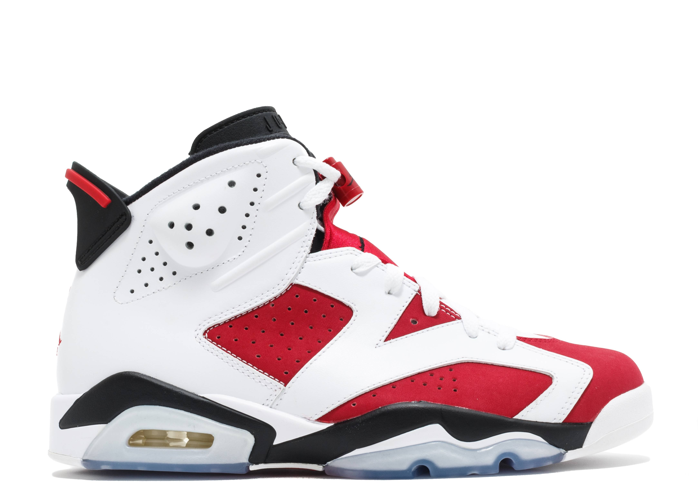

The Air Jordan 5 Retro 'Alternate Grape' delivers a variation on the silhouette's classic OG colorway from 1990. The upper, outfitted entirely in purple suede, sits atop a black foam midsole with speckled shark tooth detailing in emerald green.

This Dior x Air Jordan 1 features a White and Grey upper with “Air Dior” branding on the tongues and above the Wings logo. An all-over printed Swoosh logo on the sides atop a co-branded icy translucent outsole with a Silver Jumpman and “Air Dior” Wings hangtag completes the design.

Among the pantheon of timeless sneaker classics is the Air Jordan 11 “Concord”, the stylish white and black patent leather colorway of Tinker Hatfield’s enduring design from 1995.

The “Carmine” colorway made its debut back in 1991, and was the first Air Jordan 6 to have colored panels on the upper. They returned in the Countdown Pack in 2008, followed by its most recent appearance in 2014.